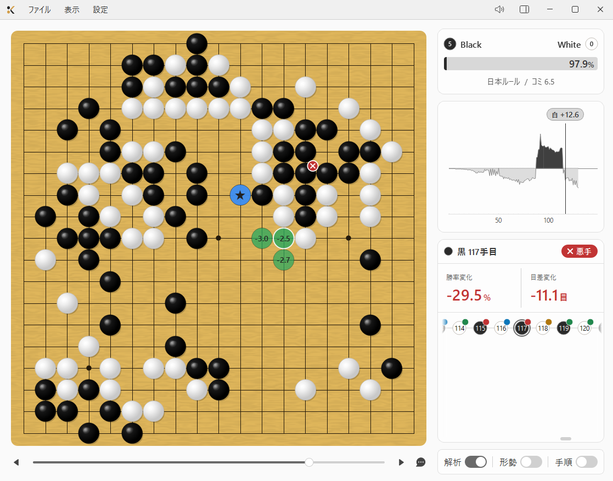
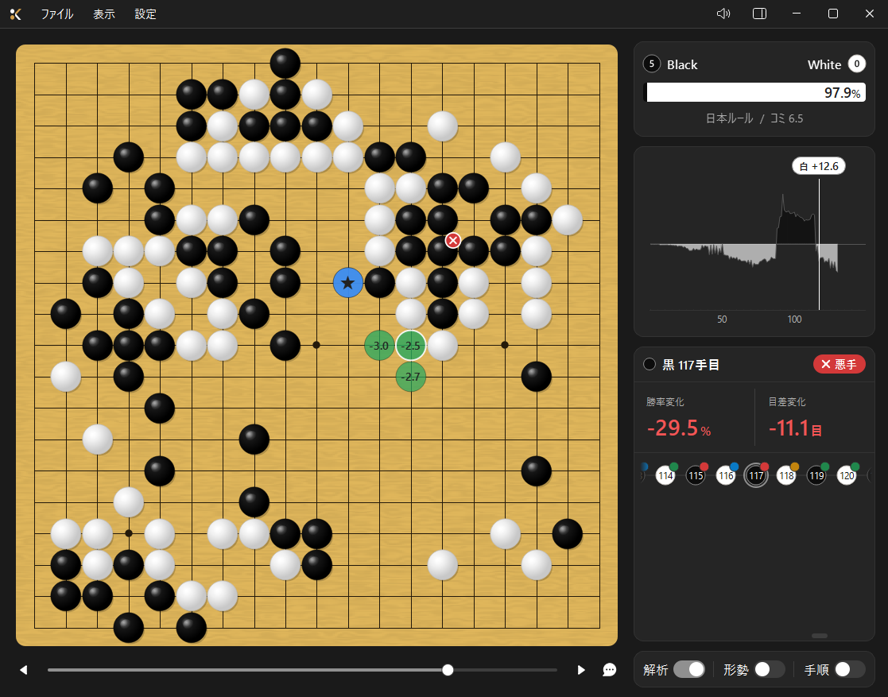

無料で使える囲碁AI解析アプリ。
わかりやすいUIで、あなたの棋力向上の手助けをします。
Screenshot

ライトモード

ダークモード
Features
棋譜全体の勝率推移をグラフで可視化。どこで形勢が傾いたか一目でわかります。
KataGoがリアルタイムで次の一手を読み続け、候補手を即座に表示します。
各手の勝率変化・目差変化を自動で評価。悪手・疑問手をバッジで明示します。
各手にコメントを記録できます。気づいたことをその場でメモし、保存できます。
ライトテーマとダークテーマを切り替えられます。環境や好みに合わせてお使いください。
すべての機能を無料でご利用いただけます。アカウント登録も不要です。
Requirements
| OS | Windows 10 / 11 |
| メモリ | 8GB 以上推奨 |
| ストレージ | 400MB 以上の空き容量 |